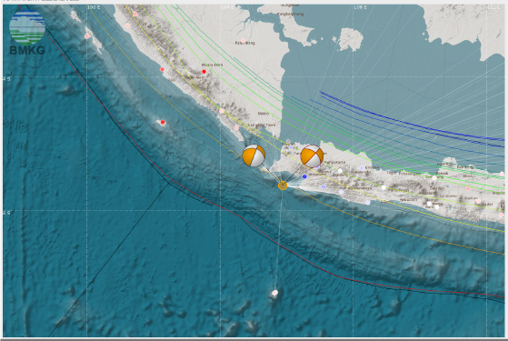

Berita
Peringatan Dini Cuaca Kalimantan Selatan
Peringatan Dini Cuaca Kalimantan Selatan tanggal 10 Maret 2017 pukul 20.15 WITA. Berpotensi terjadi hujan dengan intensitas sedang-lebat yang dapat disertai kilat/petir dan angin kencang pada....Lanjutkan..
Potensi Hujan Lebat Kembali Meningkat, Masyarakat Diimbau Waspada
Dari pantauan kondisi dinamika atmosfer terkini terindikasi munculnya potensi hujan lebat disertai kilat/petir dan angin kencang di sekitar wilayah Indonesia dalam periode 5 hari kedepan 18 - 22 Januari 2018, antara lain....Lanjutkan..
Gempabumi Provinsi Banten, M 6.1, Selasa, 23 Januari 2018, 13:34:53 WIB
Menanggapi peristiwa gempabumi tektonik yang terjadi di Provinsi BANTEN, maka kami menyampaikan pernyataan sebagai berikut: Hari Selasa, 23 Januari 2018, 13:34:50 WIB dengan kekuatan M 6.4....Lanjutkan..